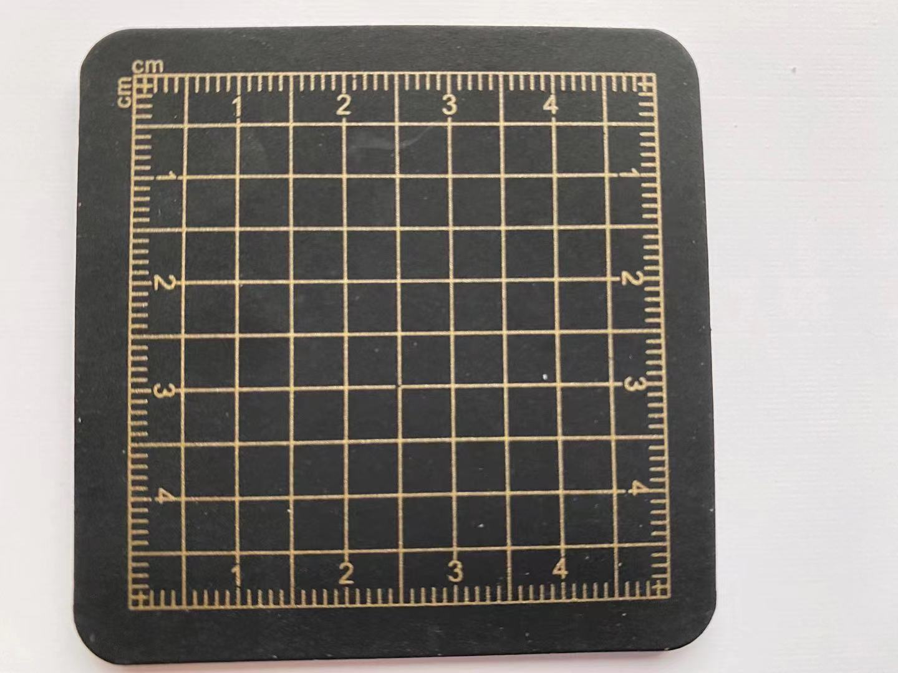

Carving knives have differnet size for engraving different lines. The shape is just like a pen, making it easier for people to use.

Rubber stamps also have different sizes and shapes for different patterns. You can also cut down the rubber when finishing engraving. Besides, rubbers have different hardness. As beginners, I chose rubber stamps with higher hardness in order to practise controlling lines.
Cutting pad works to prevent tables from being cut bt carving knives. It also helps clean out the remaining rubber scrapes.
Butter paper is used for transferring patterns drawn by pencils onto the rubber, and people varver the patterns according to the lines on the rubber. When transferring the pattern, a coin is needed to shaved off the pencil trace.

Go back to Homepage
Go to "My work in January"